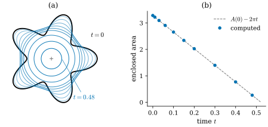
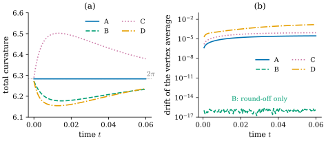
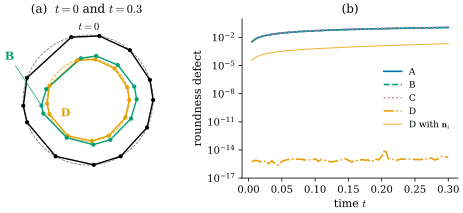

32.4 No Free Lunch: Discrete Curvature Flow
Goals
- curve shortening flow를 정의하고, smooth flow의 세 성질 TOTAL, DRIFT, ROUND를 정확한 명제로 진술하고 증명할 수 있다.
- 네 discrete curvature로 forward Euler curvature flow를 구현할 수 있다.
- 각 discrete flow가 세 성질 가운데 무엇을 정확히 지키는지 증명하고, 지키지 못하는 것은 수치 반례로 보일 수 있다.
- “no free lunch”가 무엇을 뜻하고, 이 절이 무엇을 증명하지 않는지 구분할 수 있다.
Prerequisites
- 길이의 first variation Proposition 32.2.3.
- turning angle과 그 합 Definition 32.3.1, Proposition 32.3.4. 네 discrete curvature Definition 32.3.5, 길이의 gradient Proposition 32.3.6, 세 vertex를 지나는 원 Proposition 32.3.8.
- rotation index와 그 성질: Definition 5.6.3, Proposition 5.6.4. signed area: Definition 5.7.1(Exercise 32.4.2에서만 쓴다).
Motivation
Section 32.3은 네 discrete curvature가 각각 smooth curvature의 성질 하나씩을 정확히 지킨다는 표로 끝났다. 그 표는 곡선 하나를 고정해 놓고 본 것이다. 실제 응용에서는 curvature로 곡선을 움직이는 일이 많다. 매끄럽게 하기, 잡음 제거, 모양의 변형이 그렇다. 곡선이 움직이는 동안 각 정의는 무엇을 지키는가?
이 절은 강의 슬라이드의 예를 따라 가장 단순한 curvature flow, 곧 curve shortening flow로 이 질문을 묻는다 [CMU-DDG L1]. 먼저 smooth flow의 세 성질을 정확히 적고, 네 discrete flow에서 각각을 확인한다. 결과는 표 하나로 요약된다. 어느 정의도 셋을 모두 지키지 못한다.
Curve Shortening Flow
Proposition 32.2.3에 따르면 길이를 가장 빨리 줄이는 움직임은 \(\kappa_s\mathbf{n}_s\) 방향이다. 매 순간 이 방향으로 움직이는 것이 다음 flow다.
Definition 32.4.1 (curve shortening flow). \(P \gt 0\), \(T \gt 0\)이라 하자. 매끄러운 map \(\gamma\colon \R \times [0, T) \to \R^2\)가 모든 \(t\)에서 \(\gamma(\cdot, t)\)가 주기 \(P\)인 regular closed curve이고
를 만족하면 \(\gamma\)를 curve shortening flow(곡선 단축 흐름)라 한다. 여기서 \(\kappa_s(\cdot, t)\)와 \(\mathbf{n}_s(\cdot, t)\)는 곡선 \(\gamma(\cdot, t)\)의 signed curvature와 \(\mathbf{n}_s = J\mathbf{t}\)이다.
\(\kappa_s\mathbf{n}_s = \mathbf{t}'\)(arc length에 대한 미분)은 곡선을 어떻게 parametrize하든 같은 벡터이고, \(\mathbf{n}_s\)와 \(\kappa_s\)는 진행 방향을 뒤집으면 함께 부호가 바뀌므로 \(\kappa_s\mathbf{n}_s\)는 방향에도 무관하다. 그래서 이 flow는 곡선의 모양만으로 정해진다. 볼록하게 휜 곳(\(\kappa_s \gt 0\))은 \(\mathbf{n}_s\) 쪽, 곧 휘어 들어가는 쪽으로 움직이고, 반대로 휜 곳은 반대쪽으로 움직인다. 어느 쪽이든 곡선이 펴진다.

Figure 32.4.1의 (a)에서 검은 처음 곡선과 가장 연한 파란 곡선 몇 개를 비교해 보자. 다섯 꽃잎 끝은 안으로 들어가고, 꽃잎 사이의 잘록한 곳은 바깥으로 나온다. Figure 32.2.1에서 본 대로 잘록한 곳은 \(\kappa_s \lt 0\)이므로 \(\kappa_s\mathbf{n}_s\)가 바깥을 향하기 때문이다. 그래서 곡선은 금방 볼록해지고, 그 뒤로는 둥근 모양으로 한 점을 향해 줄어든다. (b)는 이 과정 내내 넓이가 일정한 속도 \(2\pi\)로 줄어든다는 것을 보여 준다. 그 이유가 Exercise 32.4.2다.
Proposition 32.4.2 (the flow shortens the curve). curve shortening flow에서 \(L(t)\)를 \(\gamma(\cdot, t)\)의 길이라 하면
이다.
Proof. \(L(t) = \int_0^P\abs{\partial_u\gamma}\,du\)이고 적분하는 함수는 \((u, t)\)에 대해 매끄럽고 양수이므로 적분 기호 안에서 미분한다. \(\mathbf{t} = \partial_u\gamma/\abs{\partial_u\gamma}\)이라 하면 \(\partial_t\abs{\partial_u\gamma} = \inner{\mathbf{t}}{\partial_u\partial_t\gamma}\)이다. \(u\)에 대해 부분적분하면 경계항은 주기성 때문에 사라지고
\[ \begin{aligned} \frac{dL}{dt} &= \int_0^P\inner{\mathbf{t}}{\partial_u\partial_t\gamma}\,du = -\int_0^P\inner{\partial_u\mathbf{t}}{\partial_t\gamma}\,du\\ &= -\int_0^P\kappa_s\abs{\partial_u\gamma}\inner{\mathbf{n}_s}{\partial_t\gamma}\,du \end{aligned} \]이다(\(\partial_u\mathbf{t} = \abs{\partial_u\gamma}\,\kappa_s\mathbf{n}_s\)은 (32.2.1)을 chain rule로 옮긴 것). (32.4.1)을 넣고 \(ds = \abs{\partial_u\gamma}\,du\)로 쓰면 된다.
강의 슬라이드는 이 flow의 핵심 성질로 셋을 든다 [CMU-DDG L1]: (TOTAL) total curvature가 변하지 않는다, (DRIFT) 중심이 움직이지 않는다, (ROUND) 원은 크기만 바뀌고 모양을 유지한다. 셋을 정확한 명제로 쓰면 다음과 같다. DRIFT는 “무엇의 중심인가”를 정해야 하는데, 정확히 성립하는 것은 아래 (b)의 형태다.
Proposition 32.4.3 (three properties of the smooth flow). \(\gamma\)가 curve shortening flow라 하자. (a) (TOTAL) \(\int_0^{L(t)}\kappa_s\,ds = 2\pi\operatorname{rot}(\gamma(\cdot, t))\)이고, 이 값은 \(t\)에 무관하다. (b) (DRIFT) 모든 \(t\)에서 \(\displaystyle\int_0^{L(t)}\frac{\partial\gamma}{\partial t}\,ds = 0\)이다. 곧 곡선 위 속도의 arc length 가중 평균은 언제나 \(0\)이다. (c) (ROUND) \(r_0 \gt 0\)이고 \(c \in \R^2\)일 때, \(\gamma(u, t) = c + r(t)(\cos u, \sin u)\), \(r(t) = \sqrt{r_0^2 - 2t}\) (\(0 \le t \lt r_0^2/2\))은 curve shortening flow다. 곧 원은 같은 중심을 갖는 원으로 줄어들고, \(r^2\)은 기울기 \(-2\)로 줄어든다.
Proof. (a) 첫 등식은 rotation index의 정의(Definition 5.6.3)다. \(f(t) = \int_0^P\kappa_s\abs{\partial_u\gamma}\,du\)에서 적분하는 함수는 \((u, t)\)에 대해 연속이고 \([0, P]\)는 compact이므로 \(f\)는 \(t\)에 대해 연속이다. 한편 \(f(t)/2\pi\)는 언제나 정수다(Proposition 5.6.4(a)). 구간 위에서 연속이고 정수값만 갖는 함수는 intermediate value theorem에 의해 상수다. (b) (32.4.1)과 (32.2.1)에서 \(\partial_t\gamma = \kappa_s\mathbf{n}_s = d\mathbf{t}/ds\)이므로 \(\int_0^L\partial_t\gamma\,ds = \mathbf{t}(L) - \mathbf{t}(0) = 0\)이다(closed curve). (c) \(\gamma(\cdot, t)\)는 반지름 \(r(t)\)인 원을 반시계 방향으로 도는 regular closed curve이므로 \(\kappa_s = 1/r\)이고 \(\mathbf{n}_s = -(\cos u, \sin u)\)이다(Example 4.4.3). 그러면 \(\kappa_s\mathbf{n}_s = -(\cos u, \sin u)/r\)이고, \(\partial_t\gamma = r'(t)(\cos u, \sin u)\)이다. 둘이 같은 것은 \(r' = -1/r\), 곧 \((r^2)' = -2\)인 것과 같고, \(r(t) = \sqrt{r_0^2 - 2t}\)가 이것을 만족한다.
Remark 32.4.4 (facts we accept). 매끄러운 closed curve에서 시작하는 curve shortening flow는 짧은 시간 동안 존재하고 유일하다. 이것은 편미분방정식의 정리이고 이 study set에서는 증명 없이 받아들인다. 유일성을 받아들이면 (c)는 “원에서 시작한 flow는 동심원으로 줄어든다”를 뜻한다. 또 스스로 만나지 않는 closed curve는 flow 중에 스스로 만나지 않고, 유한 시간 안에 볼록해진 뒤 둥근 점으로 줄어든다. 볼록한 곡선의 경우는 Gage와 Hamilton [GageHamilton86], 일반적인 경우는 Grayson [Grayson87]의 정리다. Figure 32.4.1은 이 정리를 수치로 본 것이다.
Discrete Curve Shortening Flows
discrete curve에서는 \(\kappa_s\mathbf{n}_s\) 대신 vertex마다의 벡터를 쓰고, 시간은 forward Euler로 한 걸음씩 나아간다. 슬라이드처럼 각 discrete curvature에 하나씩 flow를 만든다.
Definition 32.4.5 (discrete curve shortening flow). 모든 vertex에서 turning angle이 정의된 closed discrete curve \(\gamma = (\gamma_0, \dots, \gamma_{n-1})\)와 \(X \in \{A, B, C, D\}\)에 대해, vertex \(i\)의 discrete curvature vector를
로 정한다. \(\mathbf{n}_i\)는 vertex normal(Proposition 32.3.6), \(c_i\)와 \(r_i\)는 \(\gamma_{i-1}, \gamma_i, \gamma_{i+1}\)을 지나는 원의 중심과 반지름이다(Proposition 32.3.8). time step \(h \gt 0\)에 대해 한 걸음
를 되풀이하는 것을 \(X\)에 대한 discrete curve shortening flow(이산 곡선 단축 흐름)라 한다.
smooth의 \(\kappa_s\mathbf{n}_s\)처럼 이 벡터들도 진행 방향에 무관하다. vertex의 순서를 뒤집으면 들어오는 tangent와 나가는 tangent가 서로 바뀌고 부호도 바뀌므로 \(\theta_i\)와 \(\mathbf{n}_i\)의 부호가 함께 바뀐다. 그래서 \(\kappa^X_i\mathbf{n}_i\)는 그대로이고, 원의 중심을 향하는 \(\boldsymbol{\kappa}^D_i\)는 처음부터 순서와 상관이 없다. 따라서 이 flow는 곡선이 반시계 방향인지 시계 방향인지 가정할 필요가 없다.
세 가지를 덧붙인다. 첫째, (32.3.5)에서 \(\boldsymbol{\kappa}^B_i = -\nabla_{\gamma_i}L\)이므로 B에 대한 flow는 discrete length의 gradient descent다. 둘째, \(\abs{\boldsymbol{\kappa}^D_i} = 1/r_i = \abs{\kappa^D_i}\)이고 (32.3.9)에 의해 \(\boldsymbol{\kappa}^D_i\)는 \(\kappa^D_i\)의 부호대로 \(\mathbf{n}_i\) 쪽 또는 반대쪽을 향한다. D에는 \(\mathbf{n}_i\) 대신 원의 중심 방향을 쓴 것이 이 정의의 선택이다. osculating circle의 curvature vector(중심을 향하고 길이가 반지름의 역수인 벡터)를 그대로 옮긴 것이고, 이 선택이 아래 ROUND의 열쇠다. 셋째, A, B, C의 \(\kappa^X_i\)는 integrated 값(약 \(\bar\ell_i\kappa_s\))이고 D는 pointwise 값(약 \(\kappa_s\))이다. 그래서 같은 \(h\)라도 A, B, C의 한 걸음은 smooth flow의 시간 \(h\bar\ell_i\)쯤에 해당하고, D의 한 걸음은 시간 \(h\)에 해당한다. 이 절의 그림은 시간을 맞추려고 D에는 \(h = \Delta t\), A, B, C에는 \(h = \Delta t/\operatorname{mean}_i\bar\ell_i\)를 쓴다. 이 시간 단위의 차이는 강의 슬라이드의 식 \(\gamma_i \leftarrow \gamma_i + \tau\kappa_iN_i\)에도 그대로 있다 [CMU-DDG L1].
Proposition 32.4.6 (regular polygons stay regular). 반지름 \(r\)인 원에 내접한 반시계 방향 정 \(n\)각형(중심 원점)에 (32.4.5)를 한 번 적용하면, \(r - h\rho_X \gt 0\)일 때 반지름 \(r - h\rho_X\)인 원에 내접한 정 \(n\)각형이 된다. 여기서
\[ \begin{aligned} \rho_A &= \frac{2\pi}{n}, &\qquad \rho_B &= 2\sin\frac{\pi}{n},\\ \rho_C &= 2\tan\frac{\pi}{n}, &\qquad \rho_D &= \frac1r \end{aligned} \]이다.
Proof. \(\gamma_i = r(\cos a_i, \sin a_i)\), \(a_i = 2\pi i/n\)이라 하자. Example 32.2.12에서 \(\mathbf{t}_{i-1} = (-\sin(a_i - \pi/n), \cos(a_i - \pi/n))\), \(\mathbf{t}_i = (-\sin(a_i + \pi/n), \cos(a_i + \pi/n))\)이므로 합차 공식에서 \(\mathbf{t}_{i-1} + \mathbf{t}_i = 2\cos(\pi/n)(-\sin a_i, \cos a_i)\)이고, \(\bar{\mathbf{t}}_i = (-\sin a_i, \cos a_i)\), \(\mathbf{n}_i = J\bar{\mathbf{t}}_i = -\gamma_i/r\)이다. 모든 vertex에서 \(\theta_i = 2\pi/n\)이므로 \(\kappa^X_i = \rho_X\)(\(X = A, B, C\))이고, \(\boldsymbol{\kappa}^X_i = -\rho_X\gamma_i/r\)이다. D는 세 vertex가 모두 그 원 위에 있으므로 \(c_i = 0\), \(r_i = r\)이고 \(\boldsymbol{\kappa}^D_i = -\gamma_i/r^2 = -\rho_D\gamma_i/r\)이다. 따라서 네 경우 모두 새 위치는 \(\gamma_i(1 - h\rho_X/r)\), 곧 원점을 중심으로 \((r - h\rho_X)/r\)배 한 것이다.
그래서 정다각형으로는 네 flow를 구별할 수 없다. 모두 정다각형을 동심 정다각형으로 보내므로 “모양을 유지한다”와 “중심이 움직이지 않는다”가 대칭 때문에 저절로 성립한다. 아래에서 ROUND는 고르지 않은 간격으로 원 위에 놓은 다각형으로, TOTAL과 DRIFT는 대칭이 없는 다각형으로 시험한다.
What Each Discrete Flow Keeps
TOTAL: turning-angle curvature
Proposition 32.4.7 (TOTAL for \(\kappa^A\)). \(\gamma(\lambda)\), \(\lambda \in [0, 1]\)이 vertex 위치가 \(\lambda\)에 대해 연속인 closed discrete curve의 family이고, 모든 \(\lambda\)에서 모든 \(\ell_i \gt 0\)이며 모든 \(\mathbf{t}_i \neq -\mathbf{t}_{i-1}\)이라 하자. 그러면 \(\sum_i\kappa^A_i = \sum_i\theta_i\)는 \(\lambda\)에 무관한 \(2\pi k\)이다. 특히 forward Euler의 한 걸음에서, 이전 다각형과 새 다각형을 잇는 선분 \(\gamma + \lambda h\boldsymbol{\kappa}^X\) (\(0 \le \lambda \le 1\)) 위의 다각형들이 모두 이 조건을 만족하면 \(\sum_i\kappa^A_i\)는 바뀌지 않는다. 이것은 \(X\)가 무엇이든, 곧 어떤 flow로 움직이든 성립한다.
Proof. \(\ell_i \gt 0\)이면 \(\mathbf{t}_i = e_i/\ell_i\)는 vertex 위치의 연속함수이고, signed angle \(\angle(u, v)\)는 \(v \neq -u\)에서 연속이다((5.6.2) 아래). 따라서 \(\lambda \mapsto \sum_i\theta_i(\lambda)\)는 연속이고, Proposition 32.3.4에 의해 \(2\pi\Z\)의 값만 갖는다. 연속이고 \(2\pi\Z\)의 값만 갖는 함수는 intermediate value theorem에 의해 상수다.
이 명제는 사실 flow에 대한 것이 아니라 \(\kappa^A\)의 정의에 대한 것이다. \(\sum\kappa^A_i\)는 어떤 다각형에서나 \(2\pi\)의 정수배이므로, 바뀌려면 정수 하나를 건너뛰어야 하고, 그러려면 어떤 edge가 길이 \(0\)이 되거나 진행 방향이 정반대로 꺾여야(\(\theta_i \to \pm\pi\)) 한다. time step이 충분히 작으면 이런 일은 한 걸음 사이에 일어나지 않는다. 그러나 오래 돌리면 실제로 일어날 수 있다. explicit flow에서는 짧은 edge가 점점 더 짧아지기도 하기 때문이다(Figure 32.4.2의 시간 범위는 그런 일이 없는 구간으로 골랐다).
DRIFT: length-variation curvature
Proposition 32.4.8 (DRIFT for \(\kappa^B\)). 모든 vertex에서 turning angle이 정의된 closed discrete curve에서 \(\sum_i\boldsymbol{\kappa}^B_i = 0\)이다. 따라서 B에 대한 flow의 한 걸음은 어떤 \(h\)에 대해서도 vertex들의 평균 위치 \(\frac1n\sum_i\gamma_i\)를 바꾸지 않는다.
Proof. (32.3.5)에서 \(\boldsymbol{\kappa}^B_i = \mathbf{t}_i - \mathbf{t}_{i-1}\)이므로 \(\sum_{i=0}^{n-1}\boldsymbol{\kappa}^B_i = \sum_i\mathbf{t}_i - \sum_i\mathbf{t}_{i-1} = 0\)이다(closed curve이므로 두 합은 같은 항을 순서만 바꿔 더한 것). 한 걸음 뒤의 평균은 \(\frac1n\sum_i(\gamma_i + h\boldsymbol{\kappa}^B_i) = \frac1n\sum_i\gamma_i\)이다.
다르게 보면, 모든 vertex를 같은 벡터 \(v\)만큼 옮겨도 길이는 변하지 않으므로 \(0 = \frac{d}{d\varepsilon}L(\gamma + \varepsilon v) = \inner{\sum_i\nabla_{\gamma_i}L}{v}\)이고, 이것이 모든 \(v\)에서 성립하므로 \(\sum_i\nabla_{\gamma_i}L = 0\)이다. 길이가 평행이동에 대해 불변이라는 대칭에서 “전체 운동량이 \(0\)”이 나온 것이다. smooth의 Proposition 32.4.3(b)와 같은 구조다. 다만 discrete에서는 가중치(각 vertex에 \(1\))가 시간에 따라 바뀌지 않으므로 평균 위치가 정확히 고정된다. pointwise 값 \(\boldsymbol{\kappa}^B_i/\bar\ell_i\)로 flow를 돌리면 가중치가 \(\bar\ell_i\)가 되어 smooth와 더 비슷해지고, 대신 평균 위치는 움직인다(Exercise 32.4.6).

Figure 32.4.2의 (a)를 먼저 보자. 시작점에서 네 선은 모두 \(2\pi\) 근처에 있다. 다각형이 꽤 촘촘하기 때문이다(Proposition 32.3.9). 그러나 움직이기 시작하면 파란 A만 수평을 유지한다. 처음 \(t = 0.01\) 동안 B, D는 내려가고 C는 올라가는데, 이것은 잘록한 곳의 꺾임이 빠르게 펴지면서 turning angle의 분포가 바뀌기 때문이다. 합이 \(2\pi\)로 고정된 \(\theta_i\)라도 그 분포에 따라 \(\sum 2\sin(\theta_i/2)\)와 \(\sum 2\tan(\theta_i/2)\)는 달라진다(Exercise 32.3.5). (b)에서는 초록 B만 바닥의 반올림 오차 띠에 머문다. 나머지 셋은 시간이 갈수록 멀어진다. A와 C의 이동은 작지만 \(0\)이 아니다. 이 다각형에서 \(\sum_i\boldsymbol{\kappa}^A_i\)와 \(\sum_i\boldsymbol{\kappa}^C_i\)가 \(0\)이 아니기 때문이다(손으로 계산할 수 있는 예는 Exercise 32.4.3).
ROUND: osculating-circle curvature
Proposition 32.4.9 (ROUND for \(\kappa^D\)). closed discrete curve의 vertex가 모두 중심 \(c\), 반지름 \(r\)인 원 위에 있고(서로 다르고, 간격은 아무래도 좋다) \(0 \lt h \lt r^2\)이라 하자. D에 대한 flow의 한 걸음 뒤에 vertex는 모두 중심 \(c\), 반지름 \(r - h/r\)인 원 위에 있고, 원 위의 순서도 그대로다. 되풀이하면 반지름은 \(r_{m+1} = r_m - h/r_m\)을 따른다(\(h \lt r_m^2\)인 동안).
Proof. 원 위의 서로 다른 세 점은 한 직선 위에 있지 않으므로 모든 \(\theta_i \neq 0\)이고, 세 점을 지나는 원은 하나뿐이므로 \(\gamma_{i-1}, \gamma_i, \gamma_{i+1}\)을 지나는 원은 주어진 원이다. 곧 모든 \(i\)에서 \(c_i = c\), \(r_i = r\)이고 \(\boldsymbol{\kappa}^D_i = (c - \gamma_i)/r^2\)이다. 따라서 \(\gamma_i + h\boldsymbol{\kappa}^D_i = c + (1 - h/r^2)(\gamma_i - c)\)이다. 이것은 \(c\)를 중심으로 \(1 - h/r^2 \in (0, 1)\)배 하는 닮음변환이므로 원 위의 순서를 보존하고, 새 반지름은 \(r(1 - h/r^2) = r - h/r\)이다.
smooth의 Proposition 32.4.3(c)와 비교하면 \(r_{m+1}^2 = r_m^2 - 2h + h^2/r_m^2\)이다. smooth flow의 \(r^2(t + h) = r^2(t) - 2h\)와 \(h^2\) 차이만 난다. 이것은 \(\boldsymbol{\kappa}^D\)의 방향을 원의 중심으로 정했기 때문에 성립한다. 같은 \(\kappa^D_i\)를 vertex normal \(\mathbf{n}_i\) 방향으로 쓰면 간격이 고르지 않은 원에서는 성립하지 않는다. \(\mathbf{n}_i\)는 두 edge의 길이가 같을 때만 중심을 향하기 때문이다(Exercise 32.3.3, Exercise 32.4.5).

Figure 32.4.3의 (a)에서 처음 다각형(검정)을 보면 오른쪽(\(335^\circ\)에서 \(18^\circ\))과 왼쪽(\(160^\circ\)에서 \(200^\circ\))에는 vertex가 촘촘하고, 왼쪽 위의 \(105^\circ\)와 \(160^\circ\) 사이는 \(55^\circ\)나 비어 있다. 주황 D는 이 불균형과 상관없이 모든 vertex가 같은 비율로 중심을 향해 움직여 주황 파선 원 위에 그대로 있다. 초록 B는 긴 edge에 붙은 vertex일수록 많이 움직여서 다각형이 찌그러진다. 원 위의 vertex에서 turning angle은 양옆 두 호의 합의 절반이므로(Example 32.3.12) \(105^\circ\)와 \(160^\circ\)의 vertex는 \(\theta_i = 40^\circ\)이고, 촘촘한 \(185^\circ\)의 vertex는 \(20^\circ\)이다. integrated 값 \(\kappa^B_i \approx \bar\ell_i/r\)를 같은 \(h\)로 쓰므로, 한 걸음에 움직이는 거리가 dual length \(\bar\ell_i\)에 비례한다. 그래서 빈 곳 쪽의 변이 다른 곳보다 빨리 안으로 들어온다. (b)에서 A, B, C의 선은 거의 겹쳐 위쪽에 있고, D는 바닥의 반올림 오차 수준에 머문다. 그 사이의 얇은 주황선이 “D의 크기에 \(\mathbf{n}_i\)의 방향”을 쓴 것이다. 같은 curvature 값이라도 방향을 잘못 고르면 ROUND를 잃는다.
Summary of the comparison
| Flow | TOTAL: \(\sum_i\kappa^X_i\) constant | DRIFT: vertex average fixed | ROUND: circle stays a circle |
|---|---|---|---|
| A turning angle | 예 (Prop. 32.4.7) | 아니오 (Fig. 32.4.2, Ex. 32.4.3) | 아니오 (Fig. 32.4.3) |
| B length variation | 아니오 (Fig. 32.4.2) | 예 (Prop. 32.4.8) | 아니오 (Fig. 32.4.3) |
| C Steiner | 아니오 (Fig. 32.4.2) | 아니오 (Fig. 32.4.2) | 아니오 (Fig. 32.4.3) |
| D osculating circle | 아니오 (Fig. 32.4.2) | 아니오 (Fig. 32.4.2) | 예 (Prop. 32.4.9) |
“예”는 위의 명제로 증명한 것이고, “아니오”는 그림의 다각형에서 수치로 확인한 반례다. 강의 슬라이드의 표는 A, B, D 세 정의에 대해 같은 결과를 보이고, 어떤 discrete curvature를 써도 셋을 동시에 지킬 수 없으며 사실 불가능하다고 덧붙인다 [CMU-DDG L1]. 이 절은 네 정의에 대해 표를 확인했을 뿐, 그런 일반적인 불가능성 정리는 증명하지 않는다. “discrete curvature”가 무엇인지(어떤 정의들을 후보로 보는지)를 정하지 않으면 그 주장은 진술조차 정확해지지 않는다. 이 장에서 말할 수 있는 것은 “여기서 본 네 정의는 각각 하나씩만 지킨다”이다.
Other no-free-lunch situations
이런 상황은 곡선의 curvature에만 있는 것이 아니다. 강의 슬라이드는 두 예를 더 든다 [CMU-DDG L1]. 하나는 mesh 위의 discrete Laplacian이다. Wardetzky, Mathur, Kälberer, Grinspun은 symmetry, locality, linear precision, 양의 weight 같은 자연스러운 성질들을 모두 갖춘 discrete Laplacian이 일반적인 mesh에서는 존재하지 않음을 보였다 [Wardetzky07]. cotan Laplacian이 그중 무엇을 지키고 무엇을 잃는지는 Section 31.3에서 미리 보았고 Chapter 42에서 자세히 다룬다. 다른 하나는 물리 시뮬레이션의 시간 적분이다. 에너지, 운동량, symplectic 구조를 모두 정확히 보존하는 시간 적분을 만들기는 어렵다는 것이다. 이 장의 forward Euler 자체도 smooth flow의 근사이며, time step이 크면 불안정해진다. explicit과 implicit time step의 차이는 Section 37.6에서 다룬다.
Summary
- curve shortening flow \(\partial_t\gamma = \kappa_s\mathbf{n}_s\)는 길이의 gradient flow이고 \(dL/dt = -\int\kappa_s^2\,ds\)이다.
- smooth flow는 TOTAL, DRIFT, ROUND를 만족한다. 정확히 말하면 DRIFT는 “속도의 가중 평균이 \(0\)”이고, 대칭이 없는 곡선의 centroid는 움직인다.
- discrete flow \(\gamma_i \leftarrow \gamma_i + h\boldsymbol{\kappa}^X_i\)에서 A는 TOTAL, B는 DRIFT(vertex 평균 고정), D는 ROUND(중심 방향을 쓸 때)를 정확히 지키고, 나머지는 수치 반례가 있다. C는 셋 다 지키지 않는다.
- 정다각형은 네 flow 모두에서 정다각형으로 남으므로 판별에 쓸 수 없다.
- “no free lunch”는 강의의 주장이다. 이 절은 네 정의에 대해서만 확인했다.
다음 장에서는 곡선에서 곡면으로 넘어가기 위한 첫 준비를 한다. Chapter 33은 mesh의 연결 구조, 곧 vertex, edge, triangle이 어떻게 이어져 있는지를 simplicial complex의 언어로 정의하고, 그것을 저장하고 탐색하는 자료구조를 다룬다.
Exercises
Exercise 32.4.1 ★ 반지름 \(1\)인 원에서 시작한 curve shortening flow는 언제 한 점이 되는가? 길이 \(L(t)\)를 구하고 (32.4.2)와 비교하여라.
Solution
Proposition 32.4.3(c)에서 \(r(t) = \sqrt{1 - 2t}\)이므로 \(t = 1/2\)에 반지름이 \(0\)이 된다. \(L(t) = 2\pi\sqrt{1 - 2t}\)이고 \(dL/dt = -2\pi/\sqrt{1 - 2t} = -2\pi/r\)이다. 한편 \(\kappa_s = 1/r\)이므로 \(\int_0^L\kappa_s^2\,ds = (1/r^2)(2\pi r) = 2\pi/r\)이고, (32.4.2)와 같다.
Exercise 32.4.2 ★★ curve shortening flow에서 \(A(t)\)를 \(\gamma(\cdot, t)\)의 signed area(Definition 5.7.1)라 하자. \(dA/dt = -\int\kappa_s\,ds\)임을 보이고, 스스로 만나지 않는 반시계 방향 곡선이면 \(dA/dt = -2\pi\)임을 보여라. flower curve에서 \(A(0)\)과 \(A(0)/2\pi\)를 구하여라.
Hint
\(A = \frac12\int_0^P\det(\gamma, \partial_u\gamma)\,du\)를 \(t\)로 미분하고, 둘째 항을 \(u\)에 대해 부분적분하여라.
Solution
\(V = \partial_t\gamma\)라 하자. (5.7.1)은 \(A = \frac12\int_0^P\det(\gamma, \partial_u\gamma)\,du\)이므로
\[ \frac{dA}{dt} = \frac12\int_0^P\bigl(\det(V, \partial_u\gamma) + \det(\gamma, \partial_uV)\bigr)\,du \]이다. \(\det\)은 bilinear이므로 \(\partial_u\det(\gamma, V) = \det(\partial_u\gamma, V) + \det(\gamma, \partial_uV)\)이고, 주기성에서 \(\int_0^P\det(\gamma, \partial_uV)\,du\) \(= -\int_0^P\det(\partial_u\gamma, V)\,du\) \(= \int_0^P\det(V, \partial_u\gamma)\,du\)이다. 따라서 \(dA/dt = \int_0^P\det(V, \partial_u\gamma)\,du\) \(= \int_0^L\det(V, \mathbf{t})\,ds\)이다. \(V = \kappa_s\mathbf{n}_s = \kappa_sJ\mathbf{t}\)를 넣으면 \(\det(J\mathbf{t}, \mathbf{t}) = -\det(\mathbf{t}, J\mathbf{t}) = -1\)이므로 \(dA/dt = -\int_0^L\kappa_s\,ds\)이다. 스스로 만나지 않는 반시계 방향 곡선은 rotation index가 \(1\)이고(Proposition 5.6.12) Proposition 32.4.3(a)에서 이 값이 flow 동안 유지되므로 \(dA/dt = -2\pi\)이다. flower curve는 원점에 대해 star-shaped이므로 극좌표 넓이 공식에서 \(A(0) = \frac12\int_0^{2\pi}(1 + 0.3\cos 5t)^2\,dt\) \(= \frac12(2\pi + 0.09\pi)\) \(= 1.045\pi = 3.2830\)이다. 넓이가 \(2\pi\)의 속도로 줄어드므로, flow가 넓이 \(0\)까지 이어진다면(Remark 32.4.4의 Grayson의 정리) 그 시각은 \(A(0)/2\pi = 0.5225\)이다. Figure 32.4.1(b)가 이 직선이다.
Exercise 32.4.3 ★★ 직각이등변삼각형 \(\gamma_0 = (0, 0)\), \(\gamma_1 = (1, 0)\), \(\gamma_2 = (0, 1)\)(반시계 방향)에서 \(\sum_i\boldsymbol{\kappa}^A_i\)와 \(\sum_i\boldsymbol{\kappa}^B_i\)를 계산하여라. A에 대한 flow의 한 걸음에서 vertex 평균은 얼마나 움직이는가?
Solution
turning angle은 \(\theta_0 = \pi/2\), \(\theta_1 = \theta_2 = 3\pi/4\)이다(합 \(2\pi\)). vertex normal은 \(\mathbf{n}_i = J\bar{\mathbf{t}}_i\)에서 \(\mathbf{n}_0 = (1, 1)/\sqrt2\), \(\mathbf{n}_1 = (-\cos\tfrac{\pi}{8}, \sin\tfrac{\pi}{8}) = (-0.9239, 0.3827)\), \(\mathbf{n}_2 = (\sin\tfrac{\pi}{8}, -\cos\tfrac{\pi}{8}) = (0.3827, -0.9239)\)이다(각 vertex에서 안쪽 각의 이등분선 방향). 그러면
\[ \begin{aligned} \sum_i\boldsymbol{\kappa}^A_i &= \tfrac{\pi}{2}\,(0.7071, 0.7071) + \tfrac{3\pi}{4}\,(-0.5412, -0.5412)\\ &= (-0.1644,\ -0.1644) \end{aligned} \]이다. 한편 \(\kappa^B_0 = 2\sin(\pi/4) = \sqrt2\), \(\kappa^B_1 = \kappa^B_2 = 2\sin(3\pi/8) = 1.8478\)이고 \(1.8478 \cdot (-0.5412) = -1.0000\)이므로 \(\sum_i\boldsymbol{\kappa}^B_i = (1, 1) + (-1, -1) = 0\)으로 Proposition 32.4.8과 맞는다. \(\boldsymbol{\kappa}^A_i\)는 \(\boldsymbol{\kappa}^B_i\)에 vertex마다 다른 배율 \(\theta_i/(2\sin(\theta_i/2))\)(\(\pi/2\)에서 \(1.111\), \(3\pi/4\)에서 \(1.275\))을 곱한 것이라 합이 \(0\)이 되지 않는다. A의 한 걸음에서 vertex 평균은 \(\frac{h}{3}(-0.1644, -0.1644)\), 곧 직각인 vertex 쪽으로 \(0.0775\,h\)만큼 움직인다.
Exercise 32.4.4 ★ 반지름 \(1\)인 원 위의 다각형에 D에 대한 flow를 \(h = 0.01\)로 25번 적용하면 반지름은 얼마인가? smooth flow의 \(r(0.25) = \sqrt{0.5}\)와 비교하고, discrete 쪽이 언제나 조금 큰 이유를 설명하여라.
Solution
Proposition 32.4.9에서 \(r_{m+1} = r_m - 0.01/r_m\)이다. 25번 되풀이하면 \(r_{25} = 0.70951\)이고, \(\sqrt{0.5} = 0.70711\)보다 \(0.0024\) 크다. 이유는 \(r_{m+1}^2 = r_m^2 - 2h + h^2/r_m^2 \gt r_m^2 - 2h\)이기 때문이다. 귀납적으로 \(r_m^2 \gt 1 - 2mh\)이고, 매 걸음 \(h^2/r_m^2\)만큼 smooth보다 덜 줄어든다. forward Euler는 \(r' = -1/r\)의 기울기를 걸음의 처음에서만 재는데, 반지름이 줄수록 \(1/r\)이 커지므로 실제 감소량보다 조금 덜 줄인다.
Exercise 32.4.5 ★ Coding. Implementation의 코드를 실행한 뒤, \(\kappa^D_i\)를 원의 중심 방향 대신 vertex normal \(\mathbf{n}_i\) 방향으로 쓴 벡터 \(\kappa^D_i\mathbf{n}_i\)로 flow를 돌리는 함수를 만들어라. Figure 32.4.3의 고르지 않은 원(단위원)에서 두 버전을 \(h = 10^{-3}\)으로 300번 돌리고, 원점까지의 거리가 얼마나 고르게 남는지 비교하여라.
Solution
def kappaD_bisector(X):
"""kappa^D_i n_i: the osculating-circle curvature along the vertex normal."""
P, Q = np.roll(X, 1, 0), np.roll(X, -1, 0)
tin = (X - P) / np.linalg.norm(X - P, axis=1, keepdims=True)
tout = (Q - X) / np.linalg.norm(Q - X, axis=1, keepdims=True)
theta = np.arctan2(tin[:, 0] * tout[:, 1] - tin[:, 1] * tout[:, 0], (tin * tout).sum(1))
tbar = (tin + tout) / np.linalg.norm(tin + tout, axis=1, keepdims=True)
kD = 2 * np.sin(theta) / np.linalg.norm(Q - P, axis=1)
return kD[:, None] * (tbar @ J.T)
def spread(X): # (max - min) / mean of the distances to the origin
d = np.linalg.norm(X, axis=1)
return (d.max() - d.min()) / d.mean()
a = np.radians([0, 18, 50, 80, 105, 160, 185, 200, 240, 275, 300, 335])
X0 = np.stack([np.cos(a), np.sin(a)], 1) # unevenly spaced on the unit circle
X1 = flow(X0, "D", 1e-3, 300) # toward the circumcenters
X2 = X0.copy()
for _ in range(300):
X2 = X2 + 1e-3 * kappaD_bisector(X2)
print(f"circumcenter direction: on one circle {spread(X1) < 1e-12}, radius {np.linalg.norm(X1, axis=1).mean():.4f}")
print(f"vertex normal n_i: spread {spread(X2):.1e}")출력은 다음과 같다.
circumcenter direction: on one circle True, radius 0.6328
vertex normal n_i: spread 5.4e-03중심 방향을 쓰면 모든 vertex가 원점에서 같은 거리에 남고 반지름은 smooth flow의 \(\sqrt{0.4} = 0.6325\)에 가깝다(Proposition 32.4.9). \(\mathbf{n}_i\) 방향을 쓰면 간격이 다른 vertex에서 \(\mathbf{n}_i\)가 원점을 비껴가므로(Exercise 32.3.3) vertex들이 원에서 벗어난다. 이 연습의 spread는 원점에서 잰 거리의 퍼짐이고, Figure 32.4.3(b)의 roundness defect(\(2.2 \times 10^{-3}\))는 최소제곱으로 맞춘 원의 중심에서 잰 것이라 값이 다르다. 맞춘 중심이 원점에서 조금 옮겨 가기 때문이다.
Exercise 32.4.6 ★
Coding. B의 pointwise 판 \(\boldsymbol{\kappa}^B_i/\bar\ell_i\)로 flow를 돌리면 vertex 평균이 고정되지 않는다는 것을, Exercise 32.4.5의 고르지 않은 원 X0에서 \(h = 10^{-3}\)으로 300걸음 돌려 확인하여라. 대신 매 걸음에서 \(\sum_i\bar\ell_i\,(\gamma_i^{\text{new}} - \gamma_i)\)가 \(0\)임을 확인하고, 이것이 Proposition 32.4.3(b)의 discrete 판인 이유를 설명하여라.
Solution
def dual_lengths(X):
ell = np.linalg.norm(np.roll(X, -1, 0) - X, axis=1)
return 0.5 * (np.roll(ell, 1) + ell)
X, worst = X0.copy(), 0.0
for _ in range(300):
lb = dual_lengths(X)
step = 1e-3 * curvature_vectors(X, "B") / lb[:, None] # pointwise kappa^B / lbar
worst = max(worst, np.abs((lb[:, None] * step).sum(0)).max())
X = X + step
print(f"vertex average moved by {np.linalg.norm(X.mean(0) - X0.mean(0)):.2e}")
print(f"sum_i lbar_i (new_i - old_i) = 0 at every step: {worst < 1e-14}")Exercise 32.4.5의 코드 다음에 실행한다. 출력은 다음과 같다.
vertex average moved by 1.76e-02
sum_i lbar_i (new_i - old_i) = 0 at every step: True\(\sum_i\bar\ell_i\cdot\boldsymbol{\kappa}^B_i/\bar\ell_i = \sum_i\boldsymbol{\kappa}^B_i = 0\)(Proposition 32.4.8)이므로 둘째 줄은 정확히 성립한다. 이것은 smooth의 \(\int\partial_t\gamma\,ds = 0\)에서 \(ds\)를 vertex의 dual length \(\bar\ell_i\)로 바꾼 것이다. 그러나 \(\bar\ell_i\)가 매 걸음 바뀌므로, 가중치를 고정한 평균인 vertex 평균은 움직인다. smooth flow에서 centroid가 움직이는 것 (32.4.3)과 같은 현상이다.